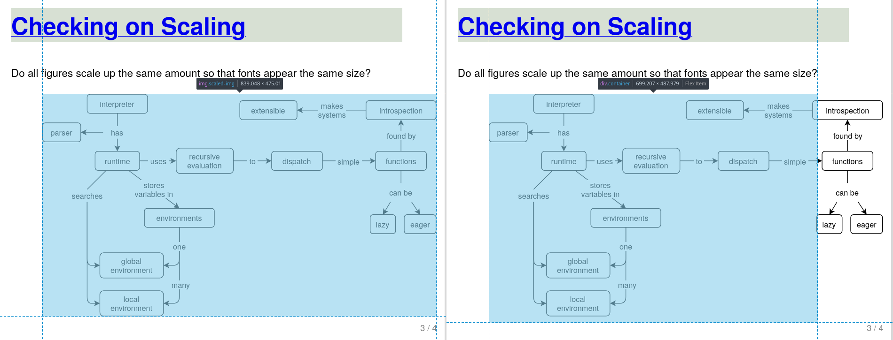

I have been teaching some informal lessons to colleagues based on
the Python version of Software Design by Example,
and one thing that has bothered me is the sizing of the diagrams.
It’s not too bad in a chapter like this one,
but when those same SVG files are displayed in slides like these
they are a bit hard to read.
I thought the solution would be simple:
“SVG” stands for “Scalable Vector Graphics”,
so I should just be able to apply a scaling factor via CSS to enlarge the diagrams
when they are displayed in slide files.
(Modifying the source isn’t an option:
they are all carefully sized for the print edition,
and I’m not going to duplicate 107 diagrams to solve what is in reality a minor annoyance.)
But what scaling factor should I apply and how should I apply it?
I can’t specify an absolute width or a page-relative fraction:
the source diagrams have different intrinsic sizes,
so either of those options would result in different diagrams being scaled by different amounts.
Doing this wouldn’t actually be so bad if they just contained lines,
but they all have text as well,
and if some of the diagrams are effectively scaled from (for example) 12-point to 15-point
while others are scaled from 12-point to 18-point,
it really stands out.
What’s worse is that when I scale up the SVG by a fixed amount (e.g., 120%)
it overlaps with the text below it.
A bit of poking around revealed that the browser lays out the text on the slide
using the SVG’s original (intrinsic) size,
and then resizes the SVG.
It isn’t noticeable if the figure is the last or only thing on the slide,
but that’s not always the case.
The best solution so far comes from Cameron DeCoster,
and relies on the fact that all of these SVG images are contained in figure elements:
:root{--image-width:80%;}figure.fullwidthimg{width:100%;}img.centered{display:block;margin-left:auto;margin-right:auto;}img.image{width:var(--image-width);}img.scaled-img{/* Setting the width to a percentage increases the size of the of the image, but the width of the image is calculated using the intrinsic size during the initial layout phase and doesn't get updated as the image is scaled up. (https://developer.mozilla.org/en-US/docs/Glossary/Intrinsic_Size) */width:120%;/* Setting the width to an explicit number provides an independent container element and everything works correctly. *//* width: 500px; *//* Using a scale transform increases the size of the image but doesn't update the page layout. As such, the image element will begin to overlap surrounding elements at higher scales. *//* transform: scale(1.6); */}
It’s still not perfect:
as the image below shows,
the rescaled figure is no longer centered.
As Cameron explains:
The centering issue is due to the fact that there’s a cyclic dependency between two elements:
the image and the container.
Using flexbox on the figure with center justified content means that
the content of the container (the image) will set the width.
However, we’re using a percentage for the width on the image,
which depends on the width of the parent (the container).
The W3C resolves this as stated here.
The result is that the initial width calculation is performed using the original size of the image,
then the container is centered,
then the image is scaled.
Unfortunately,
that means that the image centering calculation is done with a different width than the image we see,
and things look wonky.

SVG is now 25 years old.
I think “scale this up” ought to be a lot easier than it is,
but my real gripe is that I have no idea how the average person
would ever figure this out.
If you want to play around with a small example,
please check out this repository.
I left Deep Genomics and joined Plotly,
where I deleted several hundred GitHub repositories
and closed several thousand stale issues.
I still enjoy coding and teaching more than I enjoy managing,
but most tech companies don’t realize they need teachers,
and most seem uncomfortable when faced with 61-year-olds who want to code.
The Python version of Software Design by Example came out.
Reviewers seemed to like it,
but sales and website traffic have been disappointing.
I don’t know if it’s because I’m not working hard enough to get the word out,
whether long-form prose is out of fashion,
or whether I’m barking up the wrong tree,
but as I wrote a couple of weeks ago,
I’ve shelved a planned follow-up as a result.
On a related note,
I wrote a tutorial on SQL for data scientists.
I started a couple of others,
but since I don’t have an audience or venue lined up,
I doubt I’ll ever finish them.
We wound down It Will Never Work in Theory and wrote a retrospective about it.
I still post one-line summaries of interesting papers on this site,
but after fourteen years,
it was time to acknowledge that
working programmers aren’t going to care about software engineering research in my lifetime,
and that researchers aren’t going to care enough about that to change what they do or how they do it.
I ran for the board of the Python Software Foundation and came seventh.
In retrospect I’m not surprised:
I haven’t really been involved in open source communities in years.
I started playing the penny whistle,
which is the only thing I’ve tried that doesn’t aggravate my tendon problems.
I find the sound quite shrill compared to the tenor sax,
but it’s definitely improving my lung capacity.
I didn’t finish any of the children’s books I’ve been writing working on for the last few years,
write any new short stories,
or find a writing group in Toronto.
I took the family trailbiking for the first time,
almost had my (regular) bike stolen,
spent Thanksgiving at the cottage,
and went to the gym less than I should have.
What I Read
Top of the list is Samantha Harvey’s Orbital,
which deserves all the praise it has been given—I can’t remember
the last time I read something so beautifully written.
I don’t expect to cross anything off my wish list this year,
but life is full of surprises.
My daughter will finish high school in June and leave home in August to start college.
I don’t know how we’re going to fill our evenings and weekends without her,
but I imagine we’ll finally get around to terracing our back yard.
I’ll be supervising some undergradprojects at the University of Toronto
for the first time in 15 years.
I’m also going to be speaking at CUSEC 2025;
I hope this talk will age better than my last one.
I’d really like to do an internship this summer.
I understand why tech companies and universities and everyone else aren’t geared up for this,
and I realize it would be unfair of me to take a position
that might otherwise go to someone trying to start their career
in the worst job market in my working lifetime,
but it would be fun to be learning again.
Record some videos for Software Design by Example?
Maybe, but it’s a lot of work and I’m not sure who they would help.
The same goes for writing some of these books;
I’d really like to cross one or two off the list,
but see my note above about tech companies not realizing how much they need teachers.
I’m going to keep trying to write fiction,
but without peers to write for or the prospect of a market,
it’s hard to stay motivated.
The same holds for the penny whistle:
if I don’t find a teacher or a group to play with, I probably won’t stick with it.
Earlier this year I put together notes for
a companion to the JavaScript and Python versions of Software Design by Example
aimed at research software engineers.
I shelved the project because the (lack of) reaction to the first two books
convinced me that this isn’t what most people are looking for,
but I still hope that one of the software packages I built along the way might be useful.
Snailz is a set of synthetic data generators
that simulate the collection, storage, and analysis of data related to
snails in the Pacific Northwest
that are growing unusually large as a result of exposure to pollution.
One or more surveys are conducted at one or more sites.
Each survey collects genomes and sizes of snails.
A grid at each site is marked out to show the presence or absence of pollution.
Laboratory staff perform assays of the snails’ genetic material.
Each assay plate has a design showing the material applied and readings showing the measured response.
Plates may be invalidated after the fact if a staff member believes it is contaminated.
The first diagram below shows the schema of the database that holds the results;
the second shows how various scripts and parameter files interact
to create that database.
Along the way,
the scripts also create CSV files describing the designs of genomic assay plates
and both messy and tidy versions of readings for those plates.
The whole process is documented on the package site,
and all the code is open source.
Snailz database schemaSnailz data generation workflow
I was a big proponent of MOOCs when they first emerged.
Why have thousands of teachers deliver mediocre lessons
when instead we could make the best teachers presenting the best content available to everyone?
It didn’t play out that way:
building and maintaining a good online course is difficult and expensive,
so almost everything we actually got was less effective than what we’d had.
However,
MOOCs did work well for three groups:
A minority of people are autodidacts capable of learning from just about anything.
(I’ve heard their number put at one in seven, but can’t back that up.)
I strongly suspect that most professional academics are in this group,
which leads to a lot of survivor bias in judging MOOCs’ success or failure.
Right-wing political groups have long viewed teachers with hostility,
particularly if those teachers are unionized.
They won’t say
“we can gut our opponents by deskilling their profession” in public,
but “we have to embrace the future and it will save us money” serves the same end.
And speaking of money,
I wrote in 2014 that
“learning at scale” is the same as “ubiquitous surveillance in the classroom”.
I can’t talk about my direct experience of this,
but LinkedIn didn’t buy Lynda because education is a profitable business;
they spent 1.5 billion dollars in order to give employers even more information about job applicants.
During COVID,
what had once been a witty quote had turned into reality:
online education is what everyone wants for everyone else’s kids.
As public schools pushed more content online,
private after-school tutoring exploded.
Some of it is conspicuous consumption:
today’s middle-class parents humble-brag to each other
about how much they’re spending to get their kids into the right university
in the same way that they casually mention how much their latest home renovations cost.
But some of it,
I think,
stems from a growing sense of social insecurity.
More and more middle-class parents believe (rightly) that
their jobs and their children’s futures are at risk.
If poor kids can watch the same videos as yours,
then you’re going to start looking for some secret sauce that they can’t afford.
Which brings us to AI in the classroom.
I’ve been using LLMs to help me with a bit of programming at work,
and I understand why people like Jon Udell are so excited by them:
they really do make it possible for non-experts to solve difficult problems
in a fraction of the time they would otherwise need.
My daughter isn’t exactly excited by them,
but frequently consults ChatGPT when she’s struggling through math homework,
in part because a third of the teacher’s solutions to practice problems are wrong.
So yes,
I think AI has a lot of potential,
but I’d like to learn from my mistake with MOOCs.
In practice,
I think AI will be used to hollow out the teaching profession.
The Japanese call this kūdōka,
and it inevitably widens the gap between haves and have-nots.
In a few years—ten, maybe, but not twenty—I expect that most low-income children
will be “learning” from bots
while what’s left of the middle class spend an ever-larger fraction of their income
on actual human teachers for their kids,
both because it produces better results
and to prove that they are, in fact, middle class.
Those who are profiting from this politically and financially
will point at the poor kids who succeed as proof that everyone could,
and those who saw the possibility but discounted the risk will still be telling themselves
that with just a bit more tinkering and a bit more funding
we might still reach the promised land.
I hope I’m wrong.
If poor inner-city children consistently outscored children from wealthy suburban homes on standardized tests,
is anyone naive enough to believe that we would still insist on using these tests as indicators of success?
When my brother and I cleaned out my mum’s place,
I brought home a slab of fudge that she had made shortly before she died.
She was supposed to come to Ontario that month,
and my guess is that she’d planned to bring it for me as a surprise for my birthday.
I just ate the last piece of it,
and it reminded me of how long the evenings sometimes were when I was growing up.
The sun didn’t just set, at least not in the summer.
Instead,
the light ebbed little by little,
so gradually that you barely noticed it was getting darker
until something—a store closing or a light coming on in a window—made you realize
that another day had ended.
Time to make another cup of tea.
If you came in peace, be welcome.
I caught up with some former colleagues this week,
and one of the questions that came up was,
“What would you do if you could have any job you wanted?”
I have two answers:
A “scholar in residence” position where I spend my time connecting people,
mentoring junior colleagues and their projects,
and generally trying to nudge the world (or at least my corner of our profession)
in a slightly healthier direction.
I’ve always enjoyed this,
and while The Architecture of Open Source Applications
and It Will Never Work in Theory didn’t become what I hoped they would,
other ideas might.
A mid-level developer position building software for scientists.
I say “for scientists” because it’s so rewarding,
“building” because I miss being neck-deep in code,
and “mid-level” because I’d really like to learn
a few of the things that slid by me over the past twenty years.
Gleam?
htmx?
Marimo?
Terraform?
It wouldn’t really matter as long as I felt every day
that I understood something I hadn’t understood the day before.
I don’t think I could combine these two roles
because I always put programming to the side if I’m managing and networking.
I also think that it would be easier for me to get the first role than the second:
our industry doesn’t know what to do with people who want to take (what is viewed as)
a step down in their career for personal satisfaction.
The most surprising thing is that “teaching full-time” isn’t on my list
for the first time in two decades.
I built a tutorial on SQL earlier this year,
and started on three others,
but it feels a bit like wandering the halls in my old high school.
I don’t know anything well enough to teach it
that I didn’t already know ten or fifteen years ago;
while there’s a lot to be said for playing the standards,
my daughter will be moving out in a few months to start college,
and I need to find something to occupy my mind when she does.
p.s. one other thing I’d put on the wish list is an office within cycling distance.
I miss being able to grab a coffee with my co-workers once or twice a week…
I have read the following recent-ish books about software engineering management
(or in a few cases, read the first couple of chapters and just skimmed the rest).
For the most part they treat the Silicon Valley model as a given,
and if they touch on things like labor rights
or what systemic discrimination reveals about how the system actually works,
they do so only in passing.
If you know of other books that are specifically about managing software development teams,
were published after 2010,
and grapple with things VCs would rather not talk about,
I’d be grateful for pointers.
I gave a keynote at CUSEC in 2010 about evidence-based software engineering.
A recording was available on Vimeo for several years,
but it disappeared some time after 2016.
A few days ago,
though,
I got mail out of the blue from someone who had found a copy.
They shared it with me in case I wanted to post it somewhere,
so I downloaded it and watched it through,
and now I feel a little bit sad.
In increasing order:
A lot of what I said was wrong,
either because the claims I made were stronger than they should have been
or because the science itself has turned out to be flawed.
(Stereotype threat, anyone?)
I was rude to a couple of people in order to get laughs from the audience.
I don’t expect any of them will read this,
but if they do,
I’m sorry.
I really did believe things would get better.
They haven’t:
students don’t learn any more about research practices or empirical results in software engineering today
than they did fifteen years ago,
and programmers in industry are just as oblivious as they ever were.
I really did think that Making Software and It Will Never Work in Theory
would have an impact on more than a few scattered individuals;
I’m disappointed that they didn’t.
I’ll post the video in a few days,
but I honestly found parts of it hard to watch.
I’ll be speaking at CUSEC again in January;
here’s hoping that talk holds up better.
Time to make another cup of tea.
If you came in peace, be welcome.